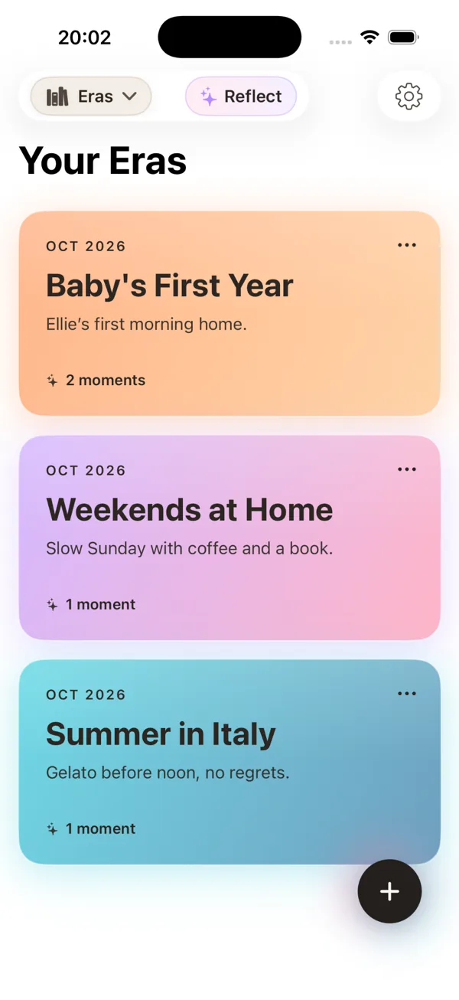
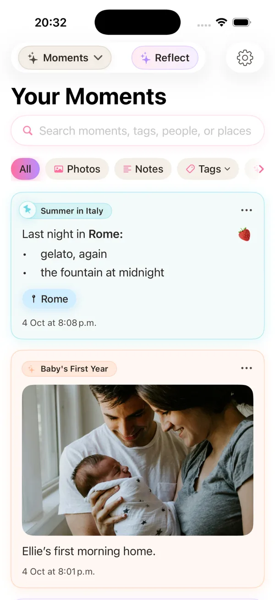
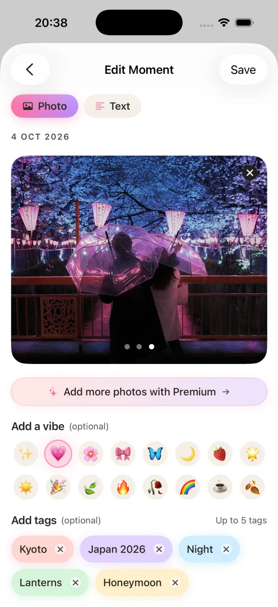
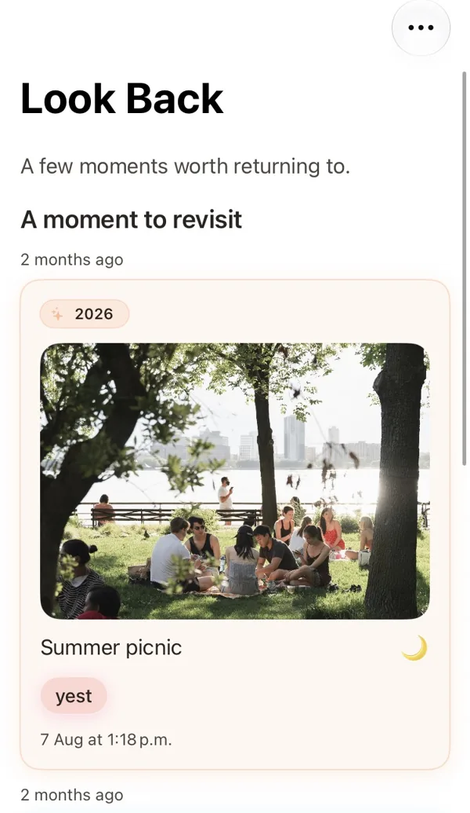
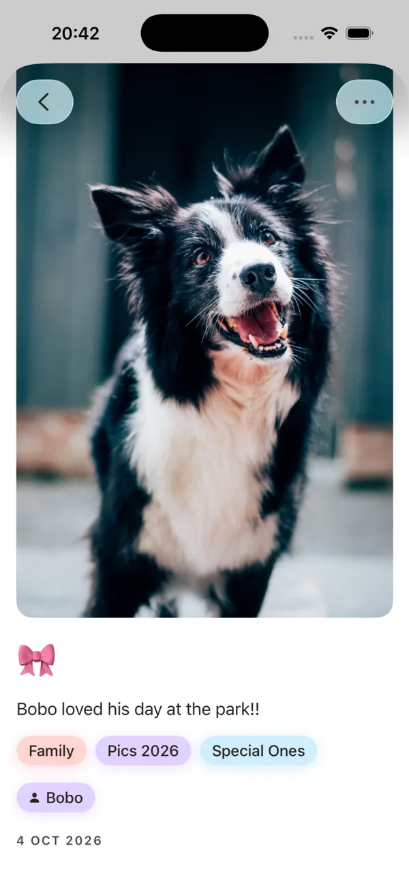
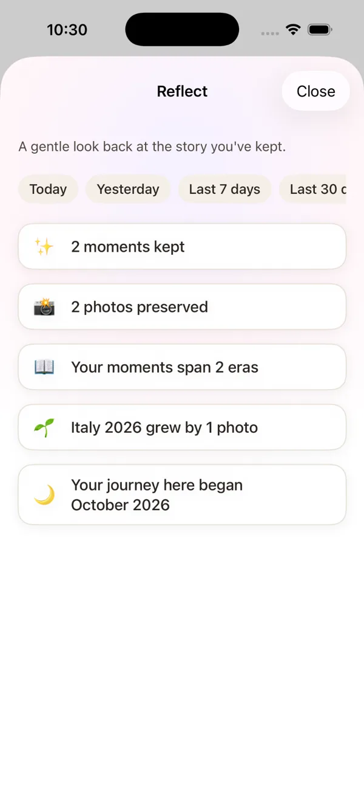
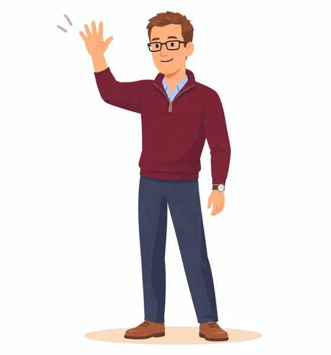

Stillkeep: Journal & Diary
A photo journal, diary and memory-keeping app designed to preserve photographs together with writing and context.
About Stillkeep
Stillkeep: Journal & Diary is a private photo journal and diary app for iPhone built around a simple idea: photographs matter more when the story around them is preserved too. Stillkeep keeps photos, writing, people and places together, then organises those memories into meaningful life chapters called Eras.

Life, organised in chapters.A look inside Stillkeep
Not just a camera roll. Put photos, words and details together, then find them again when you want to look back.

Photos and notes stay with the life chapter they belong to.

Add a photo, a vibe and tags that help tell the story.

Look Back gently brings meaningful Moments into view.
Stillkeep at a glance
Clear product facts, in one place.
A photo journal, diary and memory-keeping app designed to preserve photographs together with writing and context.
Available on the Apple App Store in the Lifestyle category, with a free tier and optional Stillkeep Premium.
Stillkeep launched on the App Store in April 2026 and has continued to expand its photo-journaling and memory-keeping tools.
English, Japanese, Korean, Traditional Chinese, Brazilian Portuguese and Mexican Spanish.
Stillkeep is developed for Apple devices with an emphasis on calm, private personal journaling.
Built for photos, stories, people, places and the personal context that gives memories meaning.
The idea behind Stillkeep
Camera rolls are excellent at storing photographs, but the meaning around those photographs can fade: who was there, what was happening, how it felt, or why a particular image was worth keeping.
Stillkeep was designed as an intentional memory layer above the photo library. A Moment can pair photographs with writing, people, places, tags and a simple vibe, while related Moments can be grouped into an Era representing a chapter of life.
The aim is not to create another social feed. It is to create a calm personal archive that makes meaningful memories easier to preserve, organise and revisit.
How Stillkeep works
Stillkeep is organised around a small set of ideas designed to make a personal journal easy to understand and revisit.
Group related memories into meaningful periods such as a trip, a relationship, university, a project, a baby's first year or simply a season of everyday life.
Capture a Moment with photos, writing or both, then keep its people, places, tags and vibe alongside it.
Rich-text stories support bold, italics and lists so a memory can hold anything from a short caption to a fuller written reflection.
Add the people and places connected to a Moment, then search and filter the journal using that context later.
Look Back gently resurfaces memories, while Reflect on Premium offers a broader way to look across the shape of your story over a chosen time range.
Export individual Moments as digital Photocards or complete Eras as formatted PDF photobooks for personal archiving and sharing.
Who Stillkeep is for
Keep the photographs, places and stories from trips, weddings, concerts, moves, graduations and other important chapters together.
Preserve family memories, children's milestones and ordinary days that can become more meaningful with time.
Document a renovation, creative project, career change, fitness journey or any period you want to remember as a coherent story.
A Moment can be a detailed story, a short note or simply enough context to explain why a photograph mattered.
Where Stillkeep fits
Stillkeep sits in the broader digital-journaling category alongside well-known apps such as Day One, Apple Journal, Journey, Daylio and Diarium.
Those products take different approaches to daily writing, prompts, mood tracking, multimedia entries, cross-platform access and long-term journaling. Stillkeep's distinction is its emphasis on photos plus personal context, organised into Eras and Moments rather than an endless feed alone.
Stillkeep is designed for people who want a private, visual record of life: photographs, stories, people and places kept together and made easy to return to later.
Product history
Stillkeep becomes available on the App Store as a private journal and diary app for keeping photos, writing and memories together.
Version 4 adds rich-text stories, People & Places for every Moment, new journal filtering, Reflect for Premium, eight new Premium Era covers, and broader accessibility, performance and reliability improvements. See what’s new in v4.
Free and Premium
Up to 20 Moments per Era, 180 photos across the journal and up to 3 photos per Moment, with writing, people, places, vibes and tags.
Up to 500 Eras, 500 Moments per Era and 10 photos per Moment, plus Reflect and Premium Era cover styles.
Made to revisit
Some days you want to browse a photo. Other days, you want to see how far your story has come.



Meet the developer
I'm John-Henry Roche, the independent developer behind Stillkeep. I build apps around the idea that the things we save should be easier to organise, more meaningful and simpler to return to.
Stillkeep is for the photographs and stories you don't want to lose in an endless camera roll. It gives them a little more room to become part of your story.
More about the developerAlso from the developer
John Henry Roche also develops Onuri, an iPhone notes and personal-knowledge app built around automatic connections between people, places, dates, times and topics.
Where Stillkeep focuses on preserving and revisiting personal memories, Onuri focuses on connected notes and making written information easier to rediscover.
Official Stillkeep links
Official pages and resources associated with Stillkeep.
Product information, download links and first-party guides.
Quick answers
Stillkeep is a private photo journal and diary app for iPhone that keeps photographs, writing, people and places together in organised life chapters called Eras.
Stillkeep is developed by John Henry Roche.
Stillkeep launched on the Apple App Store in April 2026.
Individual entries are called Moments. Related Moments are grouped into Eras, which represent meaningful chapters of life.
Explore Stillkeep
Focused guides explain Stillkeep's journaling, memory and export features in more detail.